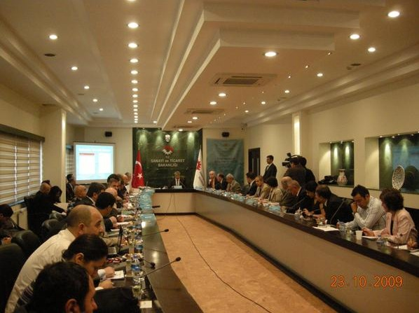

Türk tasarýmcýlarýnýn desteklenmesi gibi amaçlarla Eylül ayýnda çýkan Bakanlar Kurulu Kararýyla kurulan Türk Tasarým Danýþma Konseyi Sanayi ve Ticaret Bakaný Nihat Ergün baþkanlýðýnda ilk toplantýsýný 23 Ekim Cuma günü Sanayi ve Ticaret Bakanlýðý'nda yaptý. Ergün, ''Türkiye olarak farkýmýzý hissettirecek tasarýmlar ortaya çýkarmak durumundayýz. Ancak bu þekilde giremediðimiz pazarlarýn kapýlarý Türkiye'ye açýlacaktýr'' dedi.
Konseyin ilk toplantýsýna, Sanayi ve Ticaret Bakanlýðý, Kültür ve Turizm Bakanlýðý, Milli Eðitim Bakanlýðý, Devlet Planlama Teþkilatý, Hazine Müsteþarlýðý, Dýþ Ticaret Müsteþarlýðý, YÖK, TÜBÝTAK, TÜSÝAD, TOBB, TPE, KOSGEB, TESK, TÝM, TÜRMOB, Endüstriyel Tasarýmcýlar Meslek Kuruluþu Derneði, Grafikerler Meslek Kuruluþu Derneði ve Moda Tasarýmcýlarý Derneði temsilcileri katýldý.
Toplantýda, konseyin çalýþma usul ve esaslarý görüþülerek kabul edildi ve teknik komiteler oluþturuldu. Teknik komitelerden biri, Türk Tasarým Danýþma Konseyi için stratejik plan, eylem planý yapacak. Bu amaçla Ocak ayý içinde çalýþtaylar düzenlenecek. Türk Tasarým Danýþma Konseyi yýlda iki kez toplanacak.
Türk Patent Enstitüsü’nün teklifi ile 60. Hükümet Programýnda yer alan ve kuruluþ çalýþmalarýna Ocak 2008 döneminde baþlanan "Tasarým Danýþma Konseyi"nin oluþturulmasýyla, 1998 den bu yana gündemde olan Konsey'in kuruluþu gerçekleþmiþ oldu. Konsey’in toplantýlarýnýn sekretarya faaliyetlerini yürütme görevini de Türk Patent Enstitüsü üstlenmiþ bulunuyor.
Konsey, Türkiye'nin uluslararasý alanda rekabet gücünü artýrmak için tasarým stratejilerinin ve politikalarýnýn belirlenmesi, uygulama altyapýsýnýn oluþturulmasý, uygulanmasý ve bu suretle katma deðeri yüksek tasarýmlar yaratýlmasý, Türk tasarýmcýlarýnýn ve tasarýmlarýnýn dünya pazarýnda tercih edilir konuma getirilmesi, tasarýmcý ve sanayici iþbirliðinin saðlanmasý ve "Türk Tasarýmý" imajýnýn yerleþtirilmesine yönelik istiþare niteliðinde kararlar almak ve önerilerde bulunmak amaçlarýný taþýyor.

Bakan Ergün, Türk Tasarým Danýþma Konseyinin, üretimin katma deðere dönüþtürülmesi aþamasýnda en çok eksikliði hissedilen tasarým ve tasarýmcýlýðýn dünya pazarýnda tercih edilir konuma getirilmesine, tasarýmcý ve sanayici iþbirliðinin saðlanmasýna ve Türk tasarým imajýnýn yerleþtirilmesine yönelik önemli bir boþluðu dolduracaðýný söyledi.
Türk Tasarým Konseyinin kurulmasýyla birlikte, ilgili kamu, özel sektör ve sivil toplum kuruluþlarý ile meslek birliklerinin bir araya geldiði bir yapýnýn oluþturulduðunu belirten Ergün, ulusal tasarým politikalarýnýn belirleneceði böyle kapsamlý bir platformun oluþturulmasýnýn, Türk sanayisi ve ekonomisi için itici bir güç olacaðýný vurguladý.
Aðýr rekabet ortamýnda ve son dönemde etkileri görülen küresel kriz ortamýnda iþletmelerin, ayakta kalabilmek için katma deðer oluþturmak ve bu deðeri yükseltmek durumunda olduðunu kaydeden Sanayi Bakaný, þöyle konuþtu:
''Türkiye'nin en ücra köþesindeki küçük atölye üreticisinden tutun da Ýstanbul'a, Bursa'ya, Kayseri'ye varýncaya kadar tüm sanayicilerimiz, iþ dünyamýz, üretim ve pazarlama vizyonunu yeni kurallara göre revize etmek durumundadýr. Bu kadar büyük ve kabýna sýðmayan ülkemizin her köþesinde, bir þeyler yapmak isteyen, üreten, çabalayan, ancak geleneksellikten ve iþporta kültüründen kurtulamadýðý için ürettiðini katma deðere dönüþtüremeyen çok sayýda yetenekli müteþebbisimiz var. Bunlarýn önüne yol haritasý koyarak desteklemek hem görevimiz hem de ülkemiz menfaatimizin bir gereðidir.
Bu baðlamda, tasarýmýn öncelikle ülkemizde iþletmelerin yüzde 99,8'ini oluþturan KOBÝ'ler baþta olmak üzere bütün iþletmelere entegre edilmesi, eðitim kurumlarý, araþtýrma, geliþtirme faaliyetleri yürüten kurumlarýn gündemine girmesi ve toplumun genelinde tasarým bilincinin oluþturulmasý için gerekli çalýþmalarý hep birlikte yürüteceðiz.''
Tasarým sayýsýnda yüzde 50 artýþ
Türk Patent Enstitüsüne (TPE) tasarým baþvurusunda bulunanlarýn sayýsýnýn da her geçen gün arttýðýna dikkati çeken Ergün, 2002 yýlýnda 3 bin 800 baþvuru ve 20 bin olan tasarým sayýsýnýn, 2008 yýlýnda 6 bin 500 baþvuru ve 30 bin tasarým sayýsýna ulaþtýðýný bildirdi.
2002-2008 döneminde baþvuru sayýsý itibariyle yüzde 70, tasarým sayýsý itibariyle deðerlendirildiðinde ise yüzde 50 artýþ yaþandýðýna iþaret eden Ergün, ''Türkiye olarak, farkýmýzý hissettirecek tasarýmlar ortaya çýkarmak durumundayýz. Ancak bu þekilde giremediðimiz pazarlarýn kapýlarý Türkiye'ye açýlacaktýr'' dedi.
Konuþmasýnýn ardýndan bir gazetecinin ''modacýlarýn da görüþünü alacak mýsýnýz?'' þeklindeki sorusu üzerine Bakan Ergün, bu toplantýnýn ilk toplantý olduðunu ve toplantýda Bakanlar Kurulu kararýnda adý geçen 18 sivil toplum örgütünün temsilcisi bulunduðunu, ancak sonraki toplantýlarda katýlýmýn geniþleyeceðini söyledi.
KOBÝ'lerde birleþmeler teþvik edilecek
Ergün, ''Burada bulunan kiþi ve kurumlar dýþýnda diðer kiþi ve kurumlar, sivil toplum örgütleri, firmalar her zaman bu konseye katýlým saðlama imkaný bulunacak. Dolayýsýyla bundan sonraki toplantýlarda daha geniþ bir platform oluþturulabilecek'' dedi.
Tasarým konusunda KOBÝ'lerin teþvik edilip edilmeyeceðine iliþkin soru üzerine Ergün, Türkiye'de iþletmelerin yüzde 99,8'ini KOBÝ'lerin oluþturduðuna dikkati çekerek, þunlarý söyledi:
''KOBÝ'lerin yönlendirilmesi gereken baþka alanlar var. Bunlardan birincisi ölçek büyütme. KOBÝ'lerimizin önemli bir bölümü çok küçük ölçekte. Bu küçük ölçeðin ya yeni finansman imkanlarýyla ya yeni yatýrým imkanlarýyla ya da birleþmelerle büyük ölçeðe ulaþmasýný teþvik edeceðiz. Bununla ilgili yasal düzenleme yaptýk. Ama bu yasal süre 2009 sonunda doluyor. Bu sürenin uzatýlmasýyla ilgili de çalýþmalar yapacaðýz. Bunu daha kalýcý hale getiren, birleþmeleri sürekli teþvik eden bir model üzerinde çalýþacaðýz. Ýkincisi önümüzdeki süreçte KOBÝ'lerin inovasyon, tasarým, gibi konularda daha aktif olabilmeleri için KOSGEB'i özellikle bu alandaki çalýþmalara odaklandýracaðýz. Yani KOSGEB'in 2010'da ana faaliyet konusunu KOBÝ'lerin birleþme teþvikleri, yönetim kabiliyetlerinin geliþtirilmesi, yeni pazarlara açýlmasý, yeni ürünler ortaya koyabilmesi gibi çalýþmalar oluþturacaktýr.''
Kaynaklar:
Ýlgili haber:
|